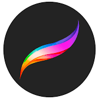
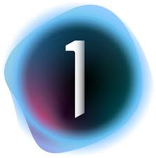
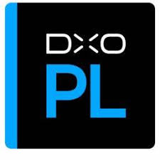
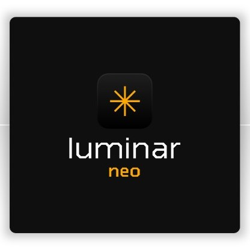

Спеціалізоване ПЗ для різних завдань
🖌️ Програми для цифрового живопису
Krita

- Безкоштовна програма з відкритим кодом
- Спеціалізація на ілюстраціях та концепт-арті
- Підтримка графічних планшетів із чутливістю до натиску
- Понад 100 професійних кистей
- Інструменти для створення анімації кадр за кадром
Procreate
- Популярний додаток для iPad
- Інтуїтивний інтерфейс для touch-екранів
- Підтримка 4K-полотна
- Покадрова анімація
- Широка бібліотека кистей та текстур
Clip Studio Paint

- Ідеально для манги та коміксів
- 3D-моделі для референсів
- Автоматичне забарвлення
- Векторні шари для лінійної графіки
- Підтримка анімації
📸 Спеціалізовані фоторедактори
Capture One
- Професійна RAW-обробка
- Точна калібрування кольору
- Підтримка прив'язаної зйомки
- Інструменти для каталогізації
- Локальні корекції з масками
DxO PhotoLab
- Автоматичне шумозаведення DeepPRIME
- Корекція оптичних спотворень
- Точне відновлення деталей
- Підтримка 600+ камер
- Інтеграція з Adobe Lightroom
Luminar Neo
- AI-інструменти для автоматичного покращення
- Заміна неба одним кліком
- Релайтинг на основі ШІ
- Видалення небажаних об'єктів
- Портретні корекції
Вибір ПЗ за рівнем підготовки
🎓 Для початківців
Paint.NET — простий інтерфейс, базові функції, безкоштовно для Windows
PhotoScape X — колажі, GIF-анімація, пакетна обробка, інтуїтивний інтерфейс
Canva — онлайн-платформа з шаблонами для соцмереж, презентацій, постерів
⚙️ Для просунутих користувачів
GIMP — повнофункціональний безкоштовний редактор, аналог Photoshop
Affinity Photo — професійні можливості за доступною ціною (одноразова оплата)
Corel PaintShop Pro — комплексний інструментарій для фото та графіки
💼 Для професіоналів
Adobe Photoshop — індустріальний стандарт, максимум можливостей
Capture One Pro — професійна RAW-обробка для фотографів
Substance Painter — текстурування 3D-моделей у високій якості
Критерії вибору програмного забезпечення
| Критерій | Що враховувати | Рекомендації |
|---|---|---|
| Системні вимоги | ОЗП, процесор, відеокарта | Мінімум 8 ГБ ОЗП для професійних програм |
| Операційна система | Windows, macOS, Linux | Перевірте сумісність перед покупкою |
| Ціна | Підписка чи одноразова оплата | Розрахуйте загальну вартість на 3-5 років |
| Підтримка форматів | RAW, PSD, TIFF, WebP тощо | Важливо для співпраці з іншими |
| Навчальні матеріали | Курси, туторіали, документація | Популярні програми мають більше ресурсів |
| Спільнота | Форуми, групи підтримки | Допомагає швидше вирішувати проблеми |
Професійні поради для ефективної роботи
⚡ Оптимізація продуктивності
Виділіть програмі більше ОЗП у налаштуваннях. Використовуйте SSD-диск для кеш-файлів. Регулярно очищуйте тимчасові файли.
🔄 Робочий процес
Створюйте власні пресети для частих операцій. Використовуйте гарячі клавіші. Налаштуйте робочий простір під свої потреби.
💾 Збереження файлів
Зберігайте оригінали у форматі програми (PSD, XCF). Створюйте резервні копії на зовнішніх носіях. Використовуйте хмарні сервіси.
🎨 Кольорокорекція
Калібруйте монітор регулярно. Працюйте в кольоровому профілі sRGB для вебу, Adobe RGB для друку. Перевіряйте результат на різних екранах.
📐 Роздільна здатність
Для друку: 300 dpi мінімум. Для вебу: 72-96 dpi достатньо. Завжди починайте з більшої роздільної здатності.
🔧 Плагіни та розширення
Встановлюйте тільки перевірені плагіни. Регулярно оновлюйте їх. Створюйте окрему папку для зовнішніх ресурсів.
Тенденції розвитку ПЗ для растрової графіки
🤖 Штучний інтелект
Сучасні програми активно впроваджують AI-функції: автоматичне виділення об'єктів, генерація контенту, інтелектуальне масштабування зображень без втрати якості, автоматична колоризація чорно-білих фото, розпізнавання та корекція обличь.
☁️ Хмарні технології
Хмарна обробка дозволяє працювати з важкими файлами на слабких пристроях, синхронізувати проєкти між пристроями, співпрацювати в реальному часі, зберігати необмежену кількість версій файлів.
🎯 Спеціалізація
Програми стають більш спеціалізованими: окремі інструменти для портретної фотографії, пейзажів, предметної зйомки, продуктового дизайну, інтеграція з 3D-редакторами.
📱 Мобільна революція
Мобільні версії професійних редакторів стають потужнішими, з'являється підтримка Apple Pencil та Samsung S Pen із максимальною точністю, розробляються спеціальні інтерфейси для планшетів.
Безпека та ліцензування
⚠️ Важливо знати:
- Завжди завантажуйте програми з офіційних сайтів
- Піратські версії можуть містити шкідливе ПЗ
- Перевіряйте ліцензійні умови перед комерційним використанням
- Деякі безкоштовні програми мають обмеження для бізнесу
- Студентські ліцензії можуть бути значно дешевшими
- Освітні установи часто мають безкоштовний доступ до платного ПЗ
Корисні ресурси для навчання
📚 Онлайн-платформи
YouTube — безліч безкоштовних туторіалів українською та англійською
Udemy, Coursera — структуровані курси від початкового до професійного рівня
Skillshare — практичні майстер-класи від діючих дизайнерів
Domestika — креативні курси з унікальною подачею матеріалу
🌐 Спільноти та форуми
Behance — портфоліо профі, джерело натхнення
ArtStation — спільнота цифрових художників
Reddit (r/photoshop, r/GIMP) — допомога та обговорення
DeviantArt — галерея та навчальні матеріали